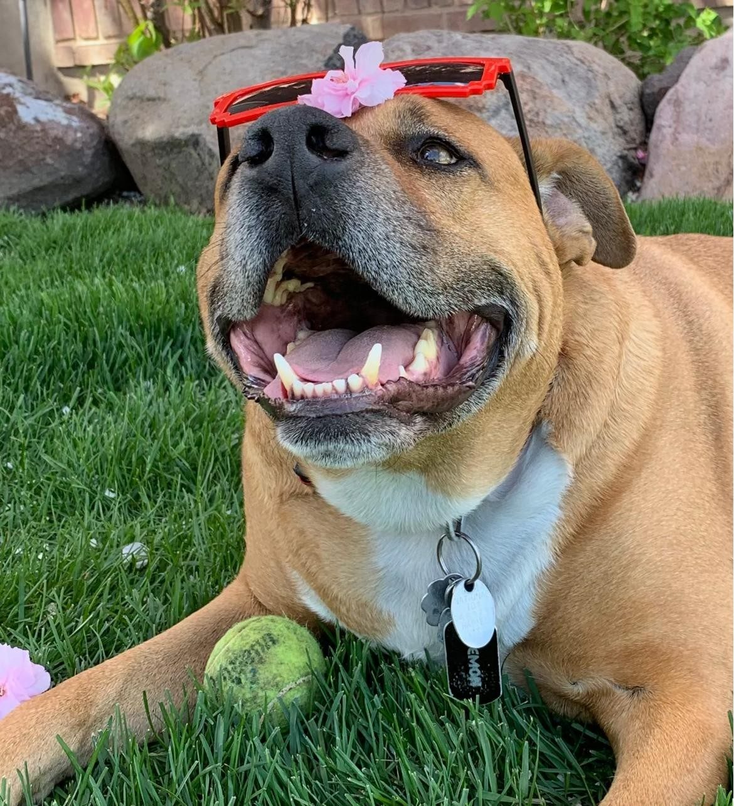

React front end
Skin-ai
A multi-step interface with camera and image handling and an external API request.
React · JavaScript · CSS
View source ↗Repository showcase; no claim of an independently validated AI model.
Coding · teaching · mentorship
Build. Teach. Connect.
I build for the web and help people find their next step. Curious about code. Grounded in people.
Student, builder and mentor.
Follow your curiosity.01 / Made with curiosity
A look at my coding work, team contributions and the way I explain what I learn.
A multi-step interface with camera and image handling and an external API request.
React · JavaScript · CSS
View source ↗Repository showcase; no claim of an independently validated AI model.
A business website repository using React and React Router for pages and navigation.
React · React Router
View source ↗Web development for a business I also supported through tax preparation and social media.
A fictional cruise website. My contributions: promotional visuals and video, layout and color-balance support, and financial-sheet organization.
Teamwork · Design · Presentation
See my LinkedIn ↗A team contribution, not a sole-developer project.
The filters on this page are a real JavaScript example: select a category, then show the matching projects.
JavaScript · DOM · Teaching
Try the lesson ↗A local teaching demonstration created for this portfolio.
02 / Always part of my story
In loving memory of Demon.
My pit bull–Boxer mix. He has a place here, beside the water, because he is still important to me.
People, pets and a little more humanity.

03 / Beyond the screen
Mountains, fresh air and a new perspective. There is more to me than what fits inside a code editor.
Making room to explore and see things differently.
From enjoying the mountain to helping someone feel confident on it.
Helping people take the next step, on a slope, in a classroom or in code.
04 / Still exploring
An idea for combining care for animals with an interface that helps people. No finished product yet.
This waterfall portfolio: a place to practise responsive design, JavaScript and motion that respects its visitors.
Small examples that explain one thing clearly. Start with the project filter below.
Try it →An unbuilt idea for combining hikes, notes and simple web interactions.
05 / Your next step
Start with something small. Understand how it works. Make it your own.
My teaching experience includes Python in an algorithmic-thinking class, working with K–3 learners and helping college peers. I enjoy making space for questions.
Talk about learning togetherChoose a category. Notice which items stay visible.
const matches = category === 'all'
|| item.dataset.kind === category;
item.hidden = !matches;Read it as: show every item when All is selected; otherwise, show only the matching category.
06 / Working with people
Sep 2026 – present
Supporting learners and remaining active in the Education and Journey process.
Sep 2026 – present
Active in the HR team of the Esade chapter of oikos International.
May – Aug 2026
Daily camp activities, counselor communication, camper safety and inclusive participation in Kamas, Utah.
Nov 2025 – Apr 2026
Teaching beginner and intermediate skiers with a focus on safety, technique and confidence.
Aug 2024 – Jan 2026
Helping students navigate their next steps and find support.
Jan 2023 – Apr 2026
Tax-preparation work and social-media support for AMT Processing & Services.
07 / Keep learning
Bachelor in Transformational Leadership and Social Impact
Aug 2026 – present · In progress
David Eccles School of Business
Studies in Accounting and Business/Management
Aug 2024 – Apr 2026 · Study dates listed on LinkedIn
08 / More than a title
I’m interested in the connections between people, ideas and purpose. My work has taken me through finance, student support, teaching and front-end development.
Mentorship is at the center of it. I want to build things that make sense and help people feel seen.
Aquarius curiosity. Nature to recharge. Demon, always part of my story.